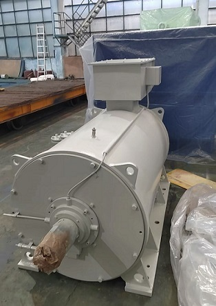
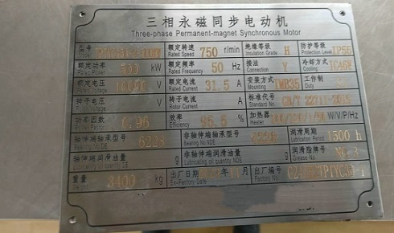
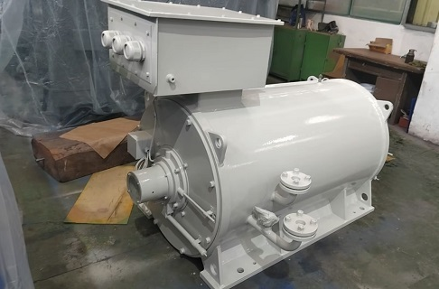
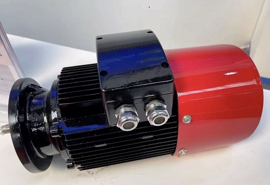
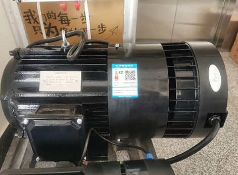

Русский
отраслевые новости

Традиционные электродвигатели потребляют много электроэнергии и требуют дорогостоящего технического обслуживания. Электродвигатели на постоянных магнитах Dazhong обеспечивают энергосбережение и снижают эксплуатационные расходы.
При модернизации промышленного энергосбережения электродвигатели как основное силовое оборудование напрямую влияют на производственные затраты и эксплуатационную эффективность. Имея более чем 60-летний опыт производства и свыше 500 патентных технологий, Jiangsu Dazhong Electric Motor разработала трехфазные самозапускающиеся синхронные двигатели на постоянных магнитах серии TYJX (TYC). Данная серия предлагает экономичные, малоэксплуатационные и безопасные силовые решения для отраслей нефтегазовой промышленности, горнодобычи, производства строительных материалов, вентиляционного и насосного оборудования. Продукция подтверждена проверенными показателями энергоэффективности, фирменными технологиями управления и высокоточным производством.
Техническая основа высокоэффективной и малопотребляющей работы
Основанная в 1958 году, компания Jiangsu Dazhong Electric Motor создала комплексную техническую систему, охватывающую научно-исследовательские разработки, испытания, производство и модернизацию. В компании работает более 200 специалистов по разработкам, ежегодные инвестиции в НИОКР превышают 4,5 % от выручки. Компания владеет более чем 500 патентами, участвовала в разработке более 60 национальных и отраслевых стандартов, располагает провинциальным научно-исследовательским центром, постдокторантурной станцией и национальней лабораторией электродвигателей.

Серия TYJX (TYC) устраняет потери на возбуждение ротора — основной недостаток традиционных асинхронных двигателей — за счет встроенной конструкции на редкоземельных постоянных магнитах. Благодаря этому в роторе отсутствуют индуцированный ток и потери скольжения, что кардинально повышает энергоэффективность. Модельный ряд охватывает мощности от 7,5 до 132 кВт, габаритные размеры 200–315, номинальные напряжения 380 В, 660 В и 1140 В. Двигатели соответствуют классу энергоэффективности 1 по стандарту GB30253. Они сохраняют высокую эффективность и низкие потери в диапазоне нагрузок 25–120 %, обеспечивая комплексное энергосбережение на 15–30 % по сравнению с асинхронными двигателями аналогичных характеристик. За весь срок службы каждый агрегат экономит сотни тысяч киловатт-часов электроэнергии.
I. Высокий коэффициент мощности и энергосбережение
У традиционных асинхронных двигателей коэффициент мощности составляет всего 0,8–0,85, поэтому требуется дополнительное оборудование для компенсации реактивной мощности, что увеличивает капитальные и эксплуатационные расходы. Благодаря оптимизированной магнитной цепи на постоянных магнитах двигатели серии TYJX (TYC) имеют коэффициент мощности, близкий к единице в номинальном режиме. Дополнительное компенсационное оборудование не требуется, что сокращает затраты на закупку и обслуживание. Также снижаются реактивные потери в электросети, улучшается качество электроэнергии и исключаются штрафы энергоснабжающих компаний за низкий коэффициент мощности. Годовая экономия электроэнергии на один двигатель составляет от нескольких тысяч до десятков тысяч евро.
II. Самостоятельный запуск и стабильная эксплуатация

Разработанные для работы с тяжелыми пусковыми нагрузками — дробилками горных предприятий, нефтяными насосными установками, тяжелыми конвейерами — двигатели TYJX (TYC) работают по схеме «асинхронный запуск, синхронная работа». Они запускаются напрямую без использования частотно-регулируемых приводов. Пусковой момент превышает номинальный в 2,5 раза, а пусковой ток составляет всего 3–4 номинальных значений, что значительно ниже показателей традиционных двигателей. Плавный запуск без ударных нагрузок защищает приводное оборудование и исключает расходы на покупку ЧРП. Благодаря запатентованной технологии снижения паразитных потерь ротора от Dazhong, скорость вибрации не превышает 1,8 мм/с, а уровень шума ниже 55 дБ — показатели превосходят государственные стандарты. Двигатели стабильно работают круглосуточно в тяжелых условиях: при горной пыли, высокой влажности на месторождениях и химической коррозии, исключая простои производственных линий из-за выхода двигателей из строя.
III. Увеличенный срок службы и минимальное техническое обслуживание

Высокие потери меди и стали в традиционных двигателях вызывают сильный нагрев и ускоренное старение изоляции. Средний срок их эксплуатации составляет всего 5–8 лет, требуется частая замена, что увеличивает стоимость обслуживания и потери от простоев. В серии TYJX (TYC) применяется эксклюзивная технология вакуумно-напрессовочной пропитки VPI от Dazhong, обеспечивающая плотную и однородную изоляцию обмоток статора с высокой теплоотдачей. Совместно с оптимизированной конструкцией охлаждающих каналов нагрев статора при номинальной нагрузке не превышает 70 К, что значительно ниже нормативных значений. Скорость старения изоляции снижается более чем на 50 %, срок службы двигателя превышает 15 лет. Износостойкие компоненты и отсутствие слабых обмоток возбуждения сводят к минимуму риски поломок. Достаточно ежегодного планового осмотра, частое обслуживание и замена деталей не требуются, что резко сокращает трудовые и материальные расходы.
IV. Компактная конструкция и универсальная совместимость
Ограниченное пространство, сложный монтаж и высокие затраты на замену оборудования — распространенные проблемы при модернизации. Благодаря компактной электромагнитной конструкции плотность мощности двигателей TYJX (TYC) на 30 % выше, чем у аналогов, габариты меньше на 20 %, а вес ниже на 25 %. Они легко устанавливаются в стесненных условиях и снижают нагрузку на несущие конструкции. Монтажные размеры соответствуют международным стандартам IEC и полностью совместимы с сериями Y, Y2, YX3, YE3. Не требуется переделка фундамента и опор, прямая замена на объекте занимает всего 1–2 часа, сокращая время простоя и производственные потери.
Строгий производственный контроль
Jiangsu Dazhong Electric Motor реализует полноценную интеллектуальную производственную систему. Обработка корпусов и крышек выполняется промышленными роботами, штамповка пакетов статора и ротора — на высокоскоростных прессах. Запатентованная технология алюминиевого литья ротора с высокой плотностью заполнения (патент № CN116944456A) гарантирует высокую электропроводность и низкие энергопотери. Финальная сборка осуществляется на автоматизированных линиях. Каждый двигатель проходит более десяти видов испытаний: холостой ход, нагрузочные тесты, контроль нагрева, изоляции и другие. Отгрузка некачественной продукции полностью исключена.
Международный опыт эксплуатации и ощутимая экономия для клиентов

Двигатели серии TYJX (TYC) экспортируются в более чем 20 стран мира, включая Германию, Австралию и государства Юго-Восточной Азии. Компания поддерживает долгосрочные стратегические партнерские отношения с ABB, BOSCH, REGAL, WAMGROUP, MILACRON, Marathon Oil, DESMI.
Клиент из сферы производства строительных материалов (Германия): замена 50 традиционных двигателей мощностью 75 кВт на агрегаты TYJX позволила снизить энергопотребление на 18 %. При стоимости электроэнергии 0,30 евро/кВт·ч и годовой эксплуатации 7500 часов на один агрегат годовая экономия составила 30 375 евро. Общая экономия по 50 двигателям — 1 518 750 евро в год.
Горнодобывающий проект (Австралия): эксплуатация 36 двигателей TYJX мощностью 110 кВт обеспечила комплексное энергосбережение на 22 %. При стоимости электроэнергии 0,25 австралийских долларов/кВт·ч и годовой работе 8000 часов один двигатель экономит 48 400 австралийских долларов в год. Общая годовая экономия по проекту — 1 742 400 австралийских долларов.
Кроме того, высокий коэффициент мощности исключает необходимость в реактивной компенсации, экономя 10 000–20 000 евро на закупку и монтаж оборудования для одной производственной линии. Благодаря сроку службы более 15 лет каждый двигатель позволяет избежать 2–3 плановых замен традиционных агрегатов, экономя 10 000–15 000 евро за весь период эксплуатации на обновление оборудования и компенсацию потерь от простоев.
Итог
Двигатели серии TYJX (TYC) от Jiangsu Dazhong Electric Motor помогают международным предприятиям снижать издержки, повышать эффективность и обеспечивать безопасную непрерывную работу. Четыре ключевых преимущества: высокий коэффициент мощности, самостоятельный стабильный запуск, срок службы более 15 лет и универсальная компактная конструкция. Подтвержденные международными проектами и долгосрочным партнерством решения обеспечивают эффективное малопотребляющее оборудование для промышленного энергосбережения и низкоуглеродного производства. Выбирайте продукцию Dazhong для безопасной, экономичной и малойэксплуатационной работы вашего производства.